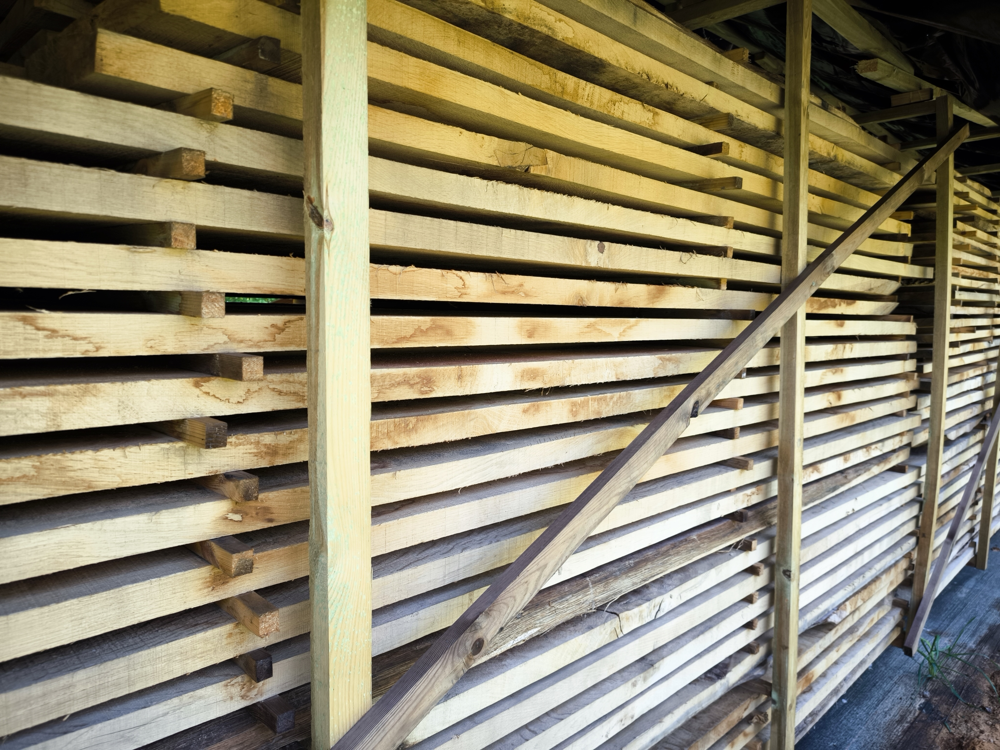
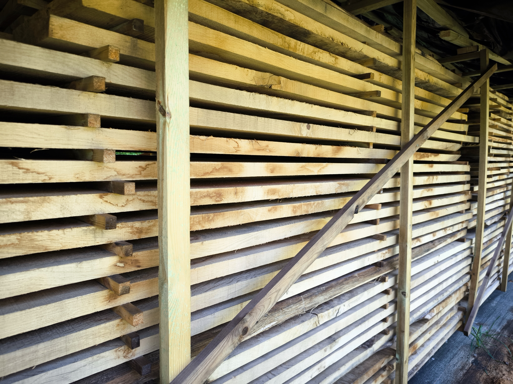

O nas
Dąb – Dobry Jestem właścicielem małego gospodarstwa rolnego i posiadam własny las o powierzchni ponad 3 ha . Rosną w nim m.in.


Sprzedaż drewna dębowego
Dąb – Dobry Jestem właścicielem małego gospodarstwa rolnego i posiadam własny las o powierzchni ponad 3 ha . Rosną w nim m.in.
Drewno dębowe to materiał o wyjątkowej twardości i trwałości. Odporne na ścieranie, wilgoć i uszkodzenia, świetnie sprawdza się w budownictwie oraz meblarstwie.
Jego charakterystyczne usłojenie i bogata kolorystyka – od miodowego po ciemny brąz – nadają każdemu projektowi naturalną elegancję.
Dąb cechuje się dużą odpornością na ściskanie i zgniatanie, zwłaszcza wzdłuż włókien, co czyni go idealnym wyborem tam, gdzie liczy się niezawodność.
Przy odpowiedniej impregnacji, drewno dębowe zachowuje piękny wygląd i trwałość przez wiele lat.

 


Wycena indywidualna przy większych ilościach. Zapraszamy do kontaktu.
Właściciel: Zygmunt Szmigiel
Adres: Morzęcin Mały ul. Wiśniowa 8, 55-120 Oborniki Śląskie
Telefon: +48 509 183 694
Email: szmigielzygmunt@gmail.com